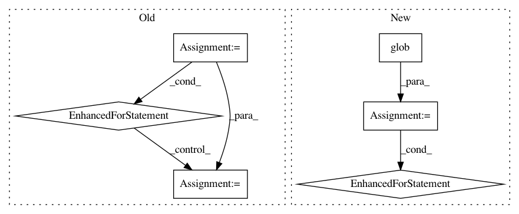

5798262e2f9d254f37cbe762f89747b7049a8acc,measurements/crinacle/crinacle_crawler.py,CrinacleCrawler,get_urls,#CrinacleCrawler#,94
Before Change
def get_urls(self):
// Link source is not a web page but raw_data folder
file_paths = dict()
for fp in glob(os.path.join(DIR_PATH, "raw_data", "*")):
name = os.path.split(fp)[1]
name = re.sub(r" [LR]\d*\.txt", "", name).replace(".txt", "")
name = re.sub(r" //\d$", "", name)
name = name.replace(".mdat", "")
if name not in file_paths:
file_paths[name] = []
file_paths[name].append(fp)
return file_paths
def process(self, item, file_paths):
fr = FrequencyResponse(name=item.true_name)
After Change
for fp in iem_source_paths:
add_to(fp, "iem")
legacy_source_paths = list(glob(os.path.join(patreon_dir, "HP measurements (legacy)", "*.txt")))
for fp in legacy_source_paths:
add_to(fp, "legacy")
gras_source_paths = list(glob(os.path.join(patreon_dir, "HP measurements (GRAS)", "FR Data (CSV)", "*.txt")))
for fp in gras_source_paths:
add_to(fp, "gras")
In pattern: SUPERPATTERN
Frequency: 3
Non-data size: 6
Instances
Project Name: jaakkopasanen/AutoEq
Commit Name: 5798262e2f9d254f37cbe762f89747b7049a8acc
Time: 2020-10-18
Author: jaakko.o.pasanen@gmail.com
File Name: measurements/crinacle/crinacle_crawler.py
Class Name: CrinacleCrawler
Method Name: get_urls
Project Name: explosion/thinc
Commit Name: 7ee43f4346812c46b8df43c8cdf7a3016958949c
Time: 2020-01-15
Author: ines@ines.io
File Name: setup.py
Class Name:
Method Name: clean
Project Name: bokeh/bokeh
Commit Name: 07a7b811cbe01aa728414fb7c67f50cae2eb4235
Time: 2017-06-15
Author: bryanv@continuum.io
File Name: scripts/build_upload.py
Class Name:
Method Name: upload_anaconda